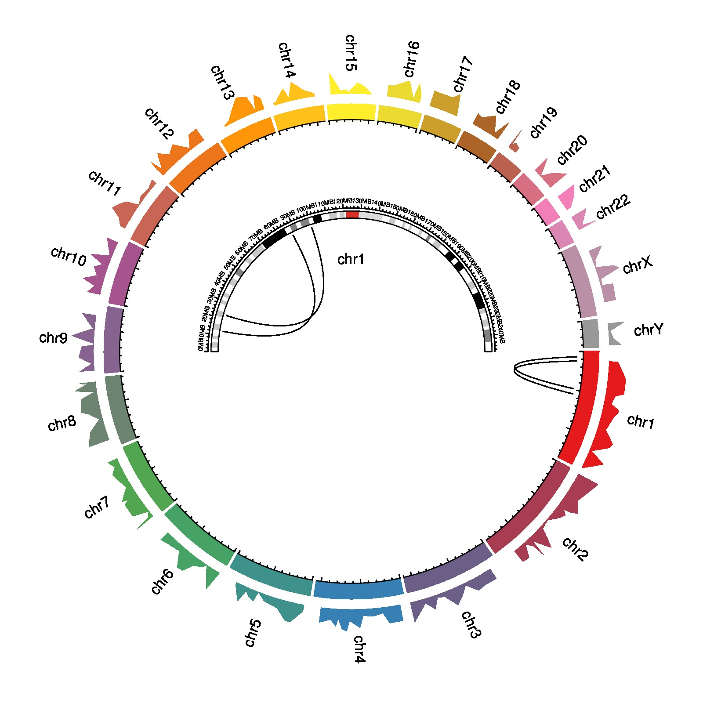

library(circlize)
col = c('#E41A1C', '#A73C52', '#6B5F88', '#3780B3', '#3F918C', '#47A266',
'#53A651', '#6D8470', '#87638F', '#A5548D', '#C96555', '#ED761C',
'#FF9508', '#FFC11A', '#FFEE2C', '#EBDA30', '#CC9F2C', '#AD6428',
'#BB614F', '#D77083', '#F37FB8', '#DA88B3', '#B990A6', '#999999')
circos.initializeWithIdeogram(plotType = NULL)
circos.trackPlotRegion(ylim = c(0, 1), bg.border = NA, track.height = 0.05,
panel.fun = function(x, y) {
xlim = get.cell.meta.data("xlim")
chr = get.cell.meta.data("sector.index")
circos.text(mean(xlim), 0.5, labels = chr, facing = "clockwise", niceFacing = TRUE)
})
bed = generateRandomBed(nr = 200, fun = function(k) runif(k))
circos.genomicTrackPlotRegion(bed, bg.border = NA, panel.fun = function(region, value, ...) {
i = get.cell.meta.data("sector.numeric.index")
circos.genomicLines(region, value, area = TRUE, border = NA, baseline = 0, col = col[i])
}, track.height = 0.1)
circos.trackPlotRegion(ylim = c(0, 1), bg.border = col, bg.col = col, panel.fun = function(x, y) {
chr = get.cell.meta.data("sector.index")
circos.axis(h = "bottom", labels = NULL, sector.index = chr, direction = "inside", major.tick.percentage = 0.2)
}, track.height = 0.05)
region1 = data.frame(chr = c("chr1", "chr1"),
start = c(12345678, 22222222),
end = c(12345678, 22222222))
region2 = data.frame(chr = c("chr1", "chr1"),
start = c(87654321, 99999999),
end = c(87654321, 99999999))
circos.genomicLink(region1, region2, h = 0.2)
circos.clear()
par(mar = c(1, 1, 1, 1), new = TRUE)
circos.par("canvas.xlim" = c(-2, 2), "canvas.ylim" = c(-2, 2), clock.wise = FALSE,
cell.padding = c(0, 0, 0, 0), gap.degree = 180)
circos.initializeWithIdeogram(chromosome.index = "chr1", plotType = c("ideogram", "axis"))
text(0, 0.6, "chr1")
circos.genomicLink(region1, region2, h = 0.5)
circos.clear()